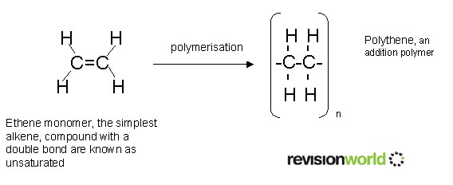

Polymerization is esstential for making plastics.
In a polymerization reaction, monomers are linked together in order to form large polymer chains. Monomers are a molecule that can be bonded to other identical molecules to form a polymer.
Source: http://honorsph.startlogic.com/honorsphysicalscience/polyethlene.htm
Polymers are chains of hundreds of thousands of bonded repeating molecules, called monomers.
There are two main processes to make plastics: polyaddition and polycondensation.
Plastics are made of natural ingredients, crude oil the main one. In polymerization, these ingredients are polymerized to form a monomer hundreds of thousands of units long. These units are hydrocarbons. Hydrocarbons heated and broken down in smaller molecules such as propylene (propane) C3H6, ethylene (ethane) C2H4, and butane C4H6. These are polymerized with different molecules in turn in order to produce the variety of plastic that we have today.
Polyaddition and polycondensation reactions are different methods of polymerization that occur for the monomer.
Polycondensation Reaction
During polycondensation reactions, two monomers combine to cause the loss of water, acid, or alcohol. The monomers both have hydrogen and hydroxyl group. The remaining electrons form a chain of bonds throughout the monomers forming a long chain of copolymers. These can be bonded to form polymers that can have different properties based on the individual characteristics of the monomers. These properties are those of plastics, cluding heat resistance, water resistance, and durability.
Polyaddition Reaction
In addition polymerization, atoms with double bonds are rearranged within the monomer to form single bonds, leaving some electrons free to bind to other monomers.
Source: https://revisionworld.com/gcse-revision/chemistry/carbon-compounds/plastics-and-polymers
Additions to the Polymer
Chemicals can be mixed into the polymer to give it characteristics that it wouldn’t already have. These cause plastic to have extreme durability and resist biodegradation.
How do These Reactions End?
Polymerization ends by termination, where two free radicals react with each other. Termination has two variants, combination or disproportionation. In combination termination, the ends of the polymers bond together. In disproportionation, a hydrogen is moved from one monomer chain to another.
Processing Plastics
There are many methods to process plastic. These include machining, compression molding, transfer molding, injection molding, extrusion, rotational molding, blow molding, thermoforming, casting, forging, and foam molding.